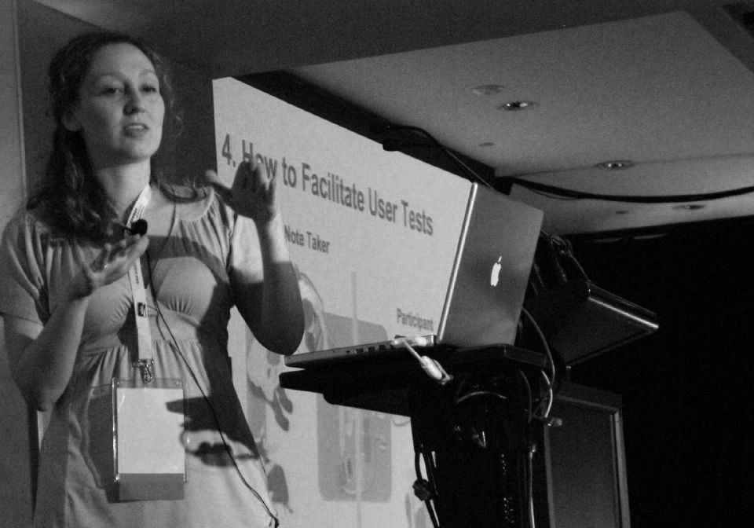
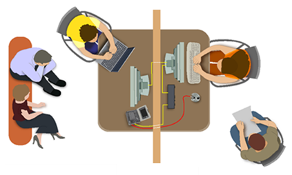

Information Architecture and User Experience Design
Brandy Fortune began creating websites in 1998 developing experience prototypes for Autotrader.com while attending college at the Art Institute of Atlanta.
By 2002 Brandy was creating XHTML and CSS2 for Cingular.com, one of the first commercial companies to embrace the updated standard. She created many wireframes, design comps and html prototypes for the "Human Centered Design" group within AT&T Mobility.
In 2006 Brandy was granted a promotion and moved to the Sales organization focusing on Information Architecture and to proliferate the IA & Usability Methodologies she had found to be successful over the years and by creating mobile usability kits for testing POS applications in the field. In 2007 Brandy had the privilege of speaking at WebDU on the topic of "Usability for Designers and Developers".
National Dairy Council
Worked with Edelman to create an updated wireframe concept for the Dairy Good website including article pages and search with an emphasis on recipes within a modular design utilizing tags and heavy imagery.
{kind=link}


XFINITY Comcast
The largest broadcasting and largest cable company in the world by revenue and a Fortune 500 company. Tasked with creating a tablet-based sales application for use by sales associates while in the field.
{kind=link}

Interactive wireframes (mockflow)
- Wireframe prototype included all screens and modals
- Simulation of home security application

webDU
WebDU was the premier web conference of its time in Sydney Australia. In 2007 I presented "Usability for Designers and Developers" including the following;
Technical "how-to" presentation, user will leave session knowing how to conduct their own usability tests and will have example protocol testing documents to build their own tests on, as well as a list of which equipment to buy and an overview of how it all works together.
- Part 1: How I came to be involved in usability testing.
- Part 2: Participatory Design and User Testing - What value does it have? Why should you do it?
- Part 3: Participatory Design Sessions - Creating Mood Boards based on user feedback and brainstorming, picking a design direction. (Real world example screens from Cingular.com resulting from Mood Board exercises)
- Part 4: Iterative User Centered Design Sessions - Showing multiple designs to users. (Real world example design comps from internal Customer Sales Portal)
- Part 5: Usability Tests on functional areas - Live and Protocol Based sessions. (This will include protocol examples, transcripts, data extraction, as well as how to present findings and recommendations)
- Part 6: How to facilitate, How to setup equipment. (Detailed list provided for equipment purchases)
"The Adobe crew were interesting, but frankly they were all glossed in a little 'sales' gleam. When it was people like Brandy Fortune (power to you Brandy), Kai König, Jesse Warden, Charlie Arehart, Caleb Adam Haye and Dmitry Baranovskiy, these are the people using the technology they are the real stars, the real people with real stories, no sales, no pitch, no NDAs. WebDU needs to enlist more of these types of speakers." - See more at: http://manwithnoblog.com/
Cingular.com
Cingular.com was one of the first Fortune 500 websites to utilize a table-less grid system which we created in 2003 to re-launch the entire consumer facing web experince.


"I worked with Brandy when AT& T Mobility (formerly Cingular Wireless) was forming, a lot of new changes were coming about, and we were involved in large collaborative projects refreshing the external and internal company web sites, she being the sole designer at times working with an external consulting firm. She entered into these design and usability projects with fresh and intelligent enthusiasm and patience, and sought to always use the latest coding standards at the time (CSS2 for example). She delivered countless visual designs, wire frames, and web sites, always of high quality and on time or ahead of schedule; some of these web sites were in use for almost ten years. She has a passion for learning, exhibits great creativity and is fun to work with!" - Kristi Eide [Senior Marketing Product Mgr AT& T Mobility]
My CSP
Used internally by all employees in call centers, stores and sales locations. An iteration of this design was still in use in 2013 and won a spot in the NN/g Top 10 Intranets of 2013.

My Cingular Intranet
Built on a grid and utilized portlets.
{kind=link}
{kind=link}
{kind=link}
Petite Purls
Developed the brand and online presence for the magazine, published quarterly. Logo creation and all graphic design including the production of HTML, CSS, JavaScript and photography as well as image editing.
Analytics: Over 5.5 million sessions in total, averaging 100,000 sessions per month. 3.5 million users with over 12 million page views.
{kind=link}
Knitty.com
The worlds most popular knitting website needed a minimal refresh to very simply moderniize the interface but not stray too much from the existing brand.
Iterative re-design concept
- Stripped out and combined unnecessary content groupings
- Simplified navigation
- Fully responsive from mobile to desktop
Responsive HTML prototype
- Created for hand-off to developer
- Built with bootstrap
{kind=link}